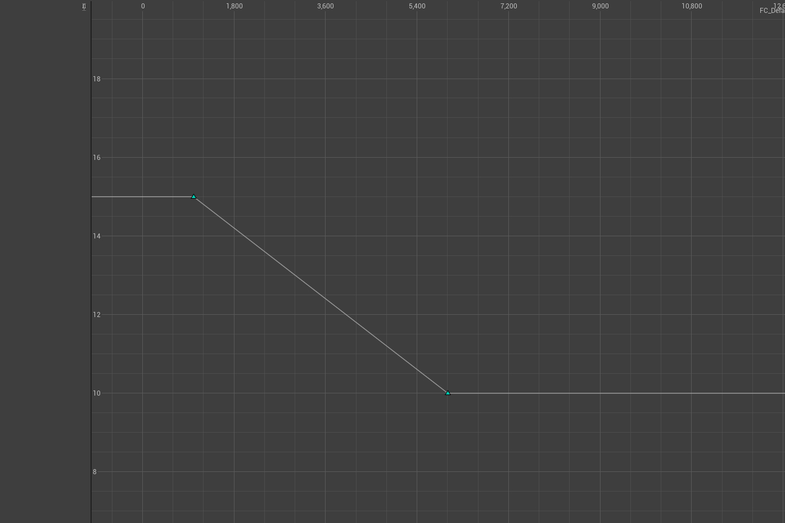
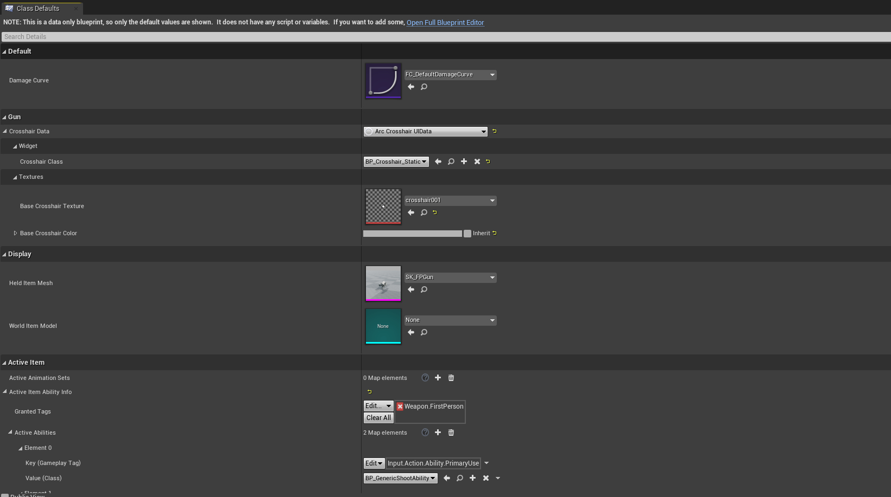
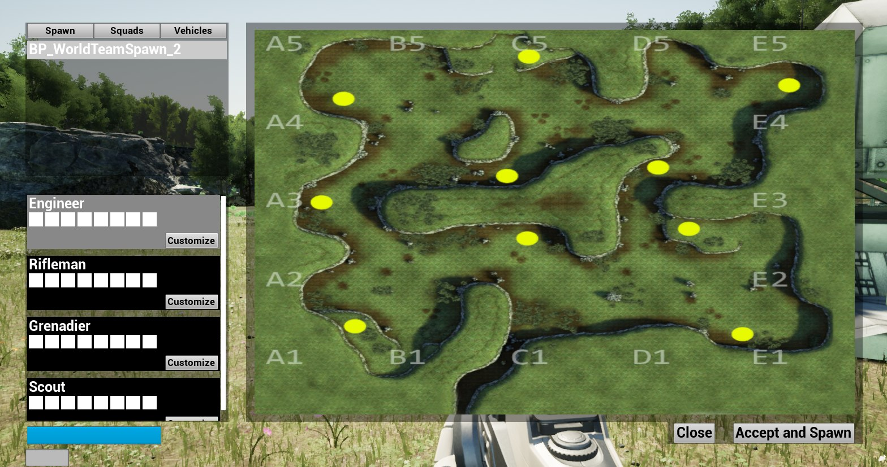
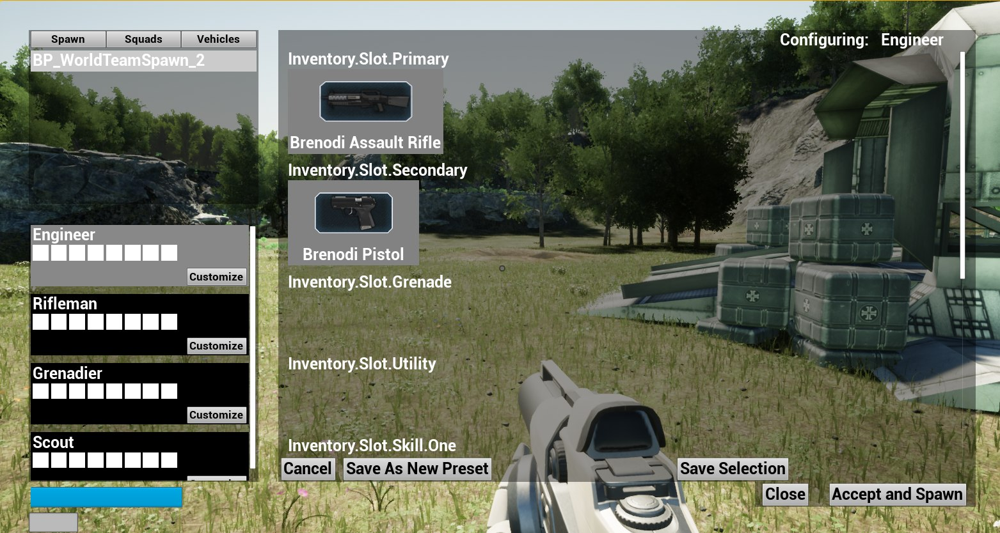

Our second full month is complete working on the Empires UE4 port. We have made some very appreciable progress toward completing the Minimum Viable milestone, and we will soon be able to check that one off.
June was a bit slower than May, mostly due to many of our team members returning to work and the reality of life during COVID settling in. As a volunteer, free time project, we are at the whims of real life obligations to make progress, and while this month’s update is shorter than last, we still made an insane amount of progress.
We are always recruiting though, for anyone who has some free time and wants to contribute to Empires. We really need Animators, and we can onboard Level Designers fairly easily. If these are skills you have, hit me up on the Empires mod discord!
Finally, let’s take a high level view of our roadmap and see where we are.
Minimum Viable
This shows us that we simply need to set up grenades and a scoreboard, and we will be able to have a very simple game, and potentially a playtest on it. Hopefully we can do this playtest in July!
Anyway, that’s the high level overview for June. Again, if you can animate 3d models or create awesome levels in Unreal Engine please reach out. I’d be happy to have you on board and help make this port happen.
Sovietshark -
For this month, it was rather uneventful for me. Between moving, classes, work, and the little bit of social life I was able to squeeze in, progress did grind to a halt. However, I hope that next month I am able to show off a level I’ve been working on while waiting for some new assets for Coast. This new map, that isn’t a port, will hopefully appeal to quite a few of you as it takes us to a jungle, something previously impossible on the Source Engine.
KGBEATS
Hi everyone, I am responsible for music production on this project. My main task the past two months has been to reproduce the existing Empires Soundtrack with better-quality sound libraries, as well as integrate some of my own compositions with original soundtrack themes intertwined.
A bit about my involvement with this game: I have been a part of the empires community since 2011. I played from 2011 to approximately 2017 before taking a few years off, and returned this year. With this project, I was asked to help recreate the soundtrack by SovietShark, who had enlisted me in creating themes for his custom maps a few years back.
So far, I have completed 5 tracks for the port, and they are available for listening below. I plan to reproduce most, if not all tracks currently in the source mod, and include additional tracks for scenarios not already accounted for sonically in game. Below is a list of what tracks I have or plan to produce, with their intended purpose in regard to gameplay. Original Soundtrack reproductions are highlighted. Additionally, keep in mind that some of these track’s length will depend on their purpose. With flag capture/lost and class upgrade for example, a simple 3-5 second blip is far more appropriate than a 2 minute track.
Roadmap:
Completed tracks:
Alliance:
Start:
Victory:
Valiance:
In Distress:
I realize there’s a LOT left to be worked on based on that list, but I am confident in completing it for this port. Unfortunately, my work situation has rapidly deteriorated in the past few weeks due to COVID however, so it will be an ongoing process while I attempt to solidify that and other aspects of my life.
June’s Gameplay Programming tasks have been primarily centralized around the flow around starting the game, spawning, and dying.
This month, I implemented Damage and Death, including a “Down but not out” state that we will use for Revive. This was incredibly straightforward, but most of the effort went into making sure that we can easily change some of these behaviors and game mechanics, allowing us to either change things by balance or allowing mods to make changes. I also spent some time thinking about Damage Types and different types of resistances, but that isn’t expressed yet in our damage calculation. I also implemented respawning on spawn points.
I also added the ability to create custom damage curves for range-based damage falloff. Empires has had a few modes of damage falloff throughout it’s life, from no damage falloff in the early days to a simple linear falloff in the early 2.0 era. Recently, it’s had a cubic falloff model. Experimenting with these different damage falloff models is something I think we should do after we finish porting the mod, so I implemented damage falloff using a custom float curve. Designers (and modders) will simply need to create a new Curve object and assign it to the weapon, and that is the curve it will use. This can be linear, cubic, or whatever curve you want to create.
 A simple linear damage curve. This gun would deal 15 damage within 15 meters and 10 damage outside of 54 meters.
 Weapon setup. This is the editor to configure every gun in the game.
I also worked on a new Spawn Screen for this month. Empires has a significant issue with it’s spawn flow, and it’s a huge wall that bars new players from even being able to play the game. You are presented with 4 whole dialogs to make choices on when you play the game for the first time. Team Select, Squad Select, Class Select, and Spawn Select. Each of these dialogs also has their own usage flow, with buttons in entirely different spots. The class menu even has a drop-down box! It’s a bit overwhelming.
Anyway, I have decided to take the Squad, Class, and Spawn select screens and merge them into one single “Spawn Screen”. This is a full screen, multimodal screen that will handle all of these selections. Spawns and the Minimap will take up a majority of the screen, with a list of available classes to quickly select. If you wish to customize your class, you simply hit the customize button and the customization screen will take over the map. I even spent a little bit of time allowing you to save class presets, and those will show up in the quick class select list.
 Work in progress Spawn Screen. Features Spawn Selection, Quick Select class menu, and the minimap
 Work in progress Class Configurator. Shows each slot and the available items in that slot. It probably won’t look like this when we are done.
Just a note: I am not an artist or UI designer. I’m focusing on functionality right now, so the UI is fairly ugly. It will get a look and feel pass :)
I hope that this will be a huge positive for veteran and new players alike. The quick class select options will allow for fast class switching when needed, and being able to create class presets will be a major boon for veteran players who like to toggle between certain skill sets for certain situations. New Players will be able to quickly see the options they have available to them and hopefully understand what they need to do to spawn in and start playing.
For July, I want to finish up the class customization features and then get to work implementing the scoreboard and being able to see everyone in the game. Once that is done, I’m going to do a cleanup pass and start preparing for a MVP Playtest.